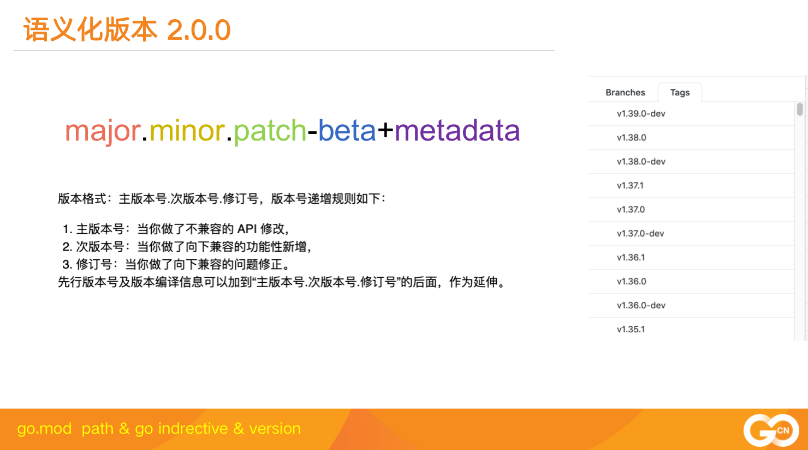
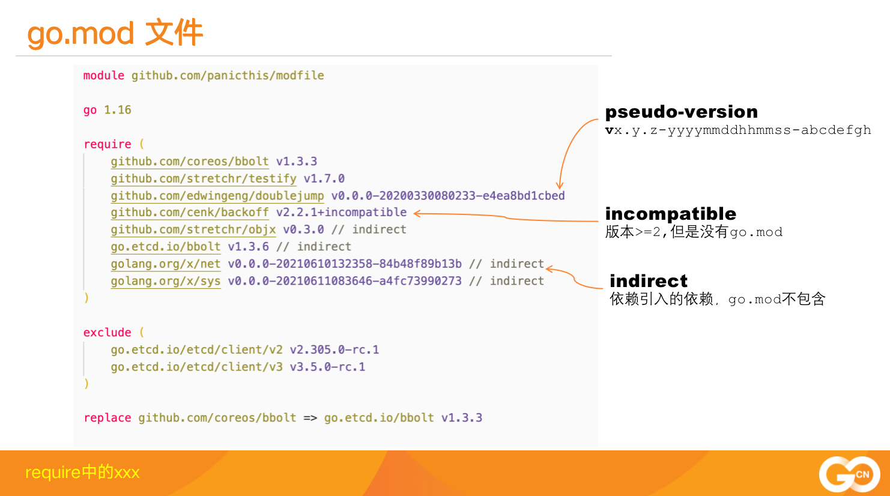

请输入密码以继续访问
go module 最重要的是 go.mod 文件的定义，它用来标记一个module和它的依赖库以及依赖库的版本。会放在module的主文件夹下，一般以go.mod命名。
一个go.mod内容类似下面的格式:
module github.com/panicthis/modfile
go 1.16
require (
github.com/cenk/backoff v2.2.1+incompatible
github.com/coreos/bbolt v1.3.3
github.com/edwingeng/doublejump v0.0.0-20200330080233-e4ea8bd1cbed
github.com/stretchr/objx v0.3.0 // indirect
github.com/stretchr/testify v1.7.0
go.etcd.io/bbolt v1.3.6 // indirect
go.etcd.io/etcd/client/v2 v2.305.0-rc.1
go.etcd.io/etcd/client/v3 v3.5.0-rc.1
golang.org/x/net v0.0.0-20210610132358-84b48f89b13b // indirect
golang.org/x/sys v0.0.0-20210611083646-a4fc73990273 // indirect
)
exclude (
go.etcd.io/etcd/client/v2 v2.305.0-rc.0
go.etcd.io/etcd/client/v3 v3.5.0-rc.0
)
retract (
v1.0.0 // 废弃的版本，请使用v1.1.0
)虽然是一个简单的文件，但是里面的乾坤不少，让我们依次介绍它们。
Go module遵循语义化版本规范 2.0.0。语义化版本规范 2.0.0规定了版本号的格式，每个字段的意义以及版本号比较的规则等等。

如果你想为你的项目发版，你可以设置tag为上面的格式，比如v1.3.0、v2.0.0-rc.1等等。metadata中在Go版本比较时是不参与运算的，只是一个辅助信息。
go.mod的第一行是module path, 一般采用仓库+module name的方式定义。这样我们获取一个module的时候，就可以到它的仓库中去查询，或者让go proxy到仓库中去查询。
module github.com/panicthis/modfile如果你的版本已经大于等于2.0.0，按照Go的规范，你应该加上major的后缀，module path改成下面的方式:
module github.com/panicthis/modfile/v2module github.com/panicthis/modfile/v3而且引用代码的时候，也要加上v2、v3、vx后缀，以便和其它major版本进行区分。
这是一个很奇怪的约定，带来的好处是你一个项目中可以使用依赖库的不同的major版本，它们可以共存。
第二行是go directive。格式是 go 1.xx,它并不是指你当前使用的Go版本，而是指明你的代码所需要的Go的最低版本。
go 1.16因为Go的标准库也有所变化，一些新的API也被增加进来，如果你的代码用到了这些新的API,你可能需要指名它依赖的go版本。
这一行不是必须的，你可以不写。
require段中列出了项目所需要的各个依赖库以及它们的版本，除了正规的v1.3.0这样的版本外，还有一些奇奇怪怪的版本和注释，那么它们又是什么意思呢？
正式的版本号我们就不需要介绍了，大家都懂:
github.com/coreos/bbolt v1.3.3
github.com/edwingeng/doublejump v0.0.0-20200330080233-e4ea8bd1cbed上面这个库中的版本号就是一个伪版本号v0.0.0-20200330080233-e4ea8bd1cbed,这是go module为它生成的一个类似符合语义化版本2.0.0版本，实际这个库并没有发布这个版本。
正是因为这个依赖库没有发布版本，而go module需要指定这个库的一个确定的版本，所以才创建的这样一个伪版本号。
go module的目的就是在go.mod中标记出这个项目所有的依赖以及它们确定的某个版本。
这里的20200330080233是这次提交的时间，格式是yyyyMMddhhmmss, 而e4ea8bd1cbed就是这个版本的commit id,通过这个字段，就可以确定这个库的特定的版本。
而前面的v0.0.0可能有多种生成方式，主要看你这个commit的base version:
vX.0.0-yyyymmddhhmmss-abcdefabcdef: 如果没有base version,那么就是vX.0.0的形式
vX.Y.Z-pre.0.yyyymmddhhmmss-abcdefabcdef： 如果base version是一个预发布的版本，比如vX.Y.Z-pre,那么它就用vX.Y.Z-pre.0的形式
vX.Y.(Z+1)-0.yyyymmddhhmmss-abcdefabcdef: 如果base version是一个正式发布的版本，那么它就patch号加1，如vX.Y.(Z+1)-0
go.etcd.io/bbolt v1.3.6 // indirect
golang.org/x/net v0.0.0-20210610132358-84b48f89b13b // indirect
golang.org/x/sys v0.0.0-20210611083646-a4fc73990273 // indirect有些库后面加了indirect后缀，这又是什么意思的。
如果用一句话总结，间接的使用了这个库，但是又没有被列到某个go.mod中，当然这句话也不算太准确，更精确的说法是下面的情况之一就会对这个库加indirect后缀：
当前项目依赖A,但是A的go.mod遗漏了B, 那么就会在当前项目的go.mod中补充B, 加indirect注释
当前项目依赖A,但是A没有go.mod,同样就会在当前项目的go.mod中补充B, 加indirect注释
当前项目依赖A,A又依赖B,当对A降级的时候，降级的A不再依赖B,这个时候B就标记indirect注释
有些库后面加了incompatible后缀，但是你如果看这些项目，它们只是发布了v2.2.1的tag,并没有+incompatible后缀。
github.com/cenk/backoff v2.2.1+incompatible这些库采用了go.mod的管理，但是不幸的是，虽然这些库的版major版本已经大于等于2了，但是他们的module path中依然没有添加v2、v3这样的后缀。
所以go module把它们标记为incompatible的，虽然可以引用，但是实际它们是不符合规范的。
如果你想在你的项目中跳过某个依赖库的某个版本，你就可以使用这个字段。
exclude (
go.etcd.io/etcd/client/v2 v2.305.0-rc.0
go.etcd.io/etcd/client/v3 v3.5.0-rc.0
)这样，Go在版本选择的时候，就会主动跳过这些版本，比如你使用go get -u ......或者go get github.com/xxx/xxx@latest等命令时，会执行version query的动作，这些版本不在考虑的范围之内。
replace也是常用的一个手段，用来解决一些错误的依赖库的引用或者调试依赖库。
replace github.com/coreos/bbolt => go.etcd.io/bbolt v1.3.3
replace github.com/panicthis/A v1.1.0 => github.com/panicthis/R v1.8.0比如etcd v3.3.x的版本中错误的使用了github.com/coreos/bbolt作为bbolt的module path,其实这个库在它自己的go.mod中声明的module path是go.etcd.io/bbolt，又比如etcd使用的grpc版本有问题，你也可以通过replace替换成所需的grpc版本。
甚至你觉得某个依赖库有问题，自己fork到本地做修改，想调试一下，你也可以替换成本地的文件夹。
replace可以替换某个库的所有版本到另一个库的特定版本，也可以替换某个库的特定版本到另一个库的特定版本。
replace github.com/coreos/bbolt => ../R如上所示对于 github.com/coreos/bbolt 模块你不想从远程仓库下载，改为从本地目录 ../R 中获取, 需要添加如上 replace 以将 Go 工具从其远程模块路径重定向到本地目录。
retract是go 1.16中新增加的内容，借用学术界期刊撤稿的术语，宣布撤回库的某个版本。
如果你误发布了某个版本，或者事后发现某个版本不成熟，那么你可以推一个新的版本，在新的版本中，声明前面的某个版本被撤回，提示大家都不要用了。
撤回的版本tag依然还存在，go proxy也存在这个版本，所以你如果强制使用，还是可以使用的，否则这些版本就会被跳过。
和exclude的区别是retract是这个库的owner定义的， 而exclude是库的使用者在自己的go.mod中定义的。
[1] 语义化版本规范 2.0.0: https://semver.org/lang/zh-CN/